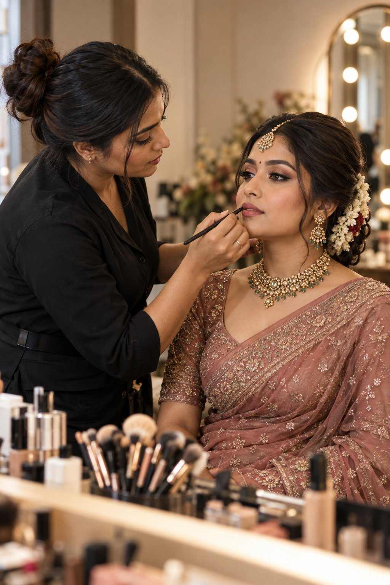

About
Learn about Sanika Makeover and a thoughtful, personal approach to makeup and hairstyling.
Makeup Artistry Crafted for Your Special Moments
Sanika Makeover brings makeup artistry and hairstyling together for weddings, celebrations, and the moments you want to remember.
Professional Beauty with a Personal Touch
From soft romantic looks to glamorous bold styles, we create customized makeup designs that complement your unique features, wedding theme, and personal preferences. Every bride deserves to feel radiant, confident, and absolutely stunning on their special day.
Our services include consultations, makeup trials, touch-up support, and coordinated bridal hair and makeup.
-
✓
Premium Products: Product choices are considered with your preferences and event in mind.
-
✓
Custom Trials: Pre-wedding makeup trials to perfect your look before the big day.
-
✓
All-Day Coverage: Makeup application tailored to your event and preferences.
-
✓
Complete Coordination: Hair and makeup synchronized perfectly for your complete bridal look.

Planning a wedding or special occasion?
Start a conversation